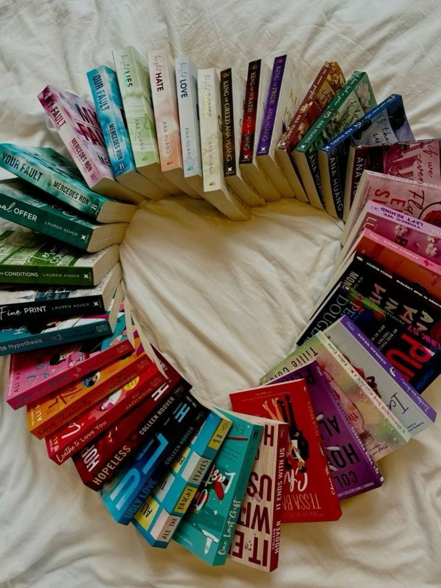

si tu aime les livres et conseiller les gens ou tu as tout simplement une panne de lecture se site est fait pour vous
se site propose des lecture guidé allant de roman Sclassique a contemporain tu trouvera ton bonheur



Lire des livres, c’est comme ouvrir une porte vers un autre monde. Chaque page me fait découvrir de nouvelles histoires, des émotions, des personnages auxquels je m’attache. La lecture me fait rêver, réfléchir et parfois même me sentir moins seule. J’aime lire parce que cela me permet d’apprendre, de m’évader, et de grandir. C’est un moment à moi, un refuge où je peux me retrouver. Les livres sont mes compagnons de route, et l’amour que je porte à la lecture ne cesse de grandir chaque jour.C’est pour cela que j’ai envie de partager mon expérience avec vous et de découvrir les livres qui vous ont fait pleurer, rire, ou même vous énerver.